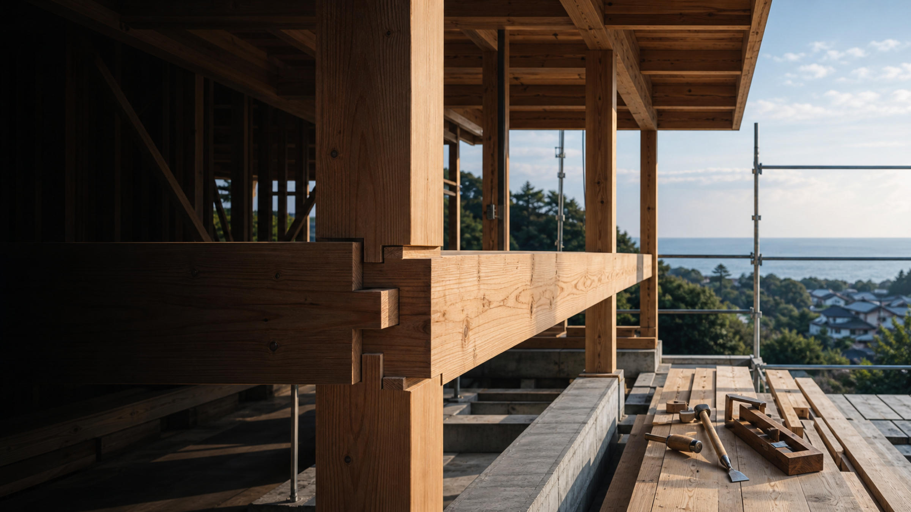
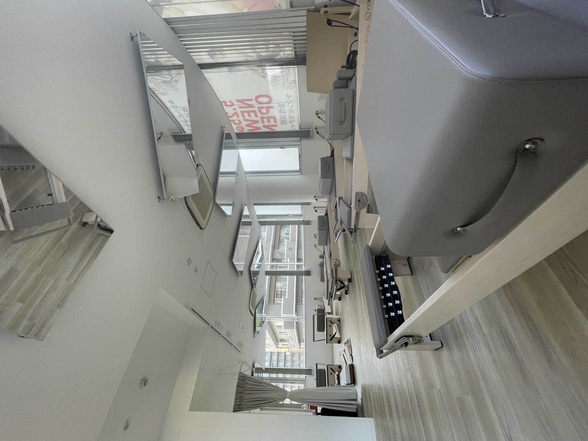
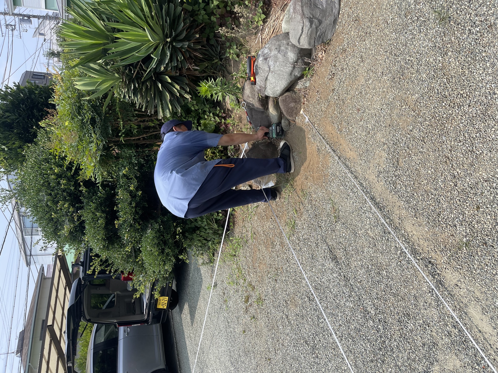

SHONAN / HIRATSUKA
CRAFT
THE LIFE.
ただ作るだけじゃない。大工の目線で原因を見抜き、直し、建物のこれからをつくる。職人とカルチャーが息づく建設ブランド。
SCROLL
01 / PHILOSOPHYCRAFT
CRAFT
BEYOND.
木造住宅・店舗工事から修繕、塗装、害虫・外獣対策まで。分野で線を引かず、建物に起きていることを総合的に捉えます。
表面をきれいにする前に、
傷んだ理由を見つける。
それが、大工の仕事だと思う。

ABOUT US
建物を、
総合的に守り育てる。
代表・田中順一は、大工として25年以上現場に立ち続けてきました。構造や納まりはもちろん、雨漏れ、腐食、害虫や外獣被害まで、建物にまつわる問題を根本から見極めます。
「どこに頼めばいいかわからない」。そんな時に、まず最初に相談される存在でありたいと考えています。
VIEW COMPANY ↗02 / SERVICEWHAT
WHAT
WE DO.
新しくつくることも、今あるものを長く活かすことも。現場経験を土台に、柔軟に応えます。
03 / SELECTED WORKS
ALL PROJECTS ↗WORKS.

JOIN OUR CREW
まだ6年目の、
“小学生”です。
完成された会社に入るより、これからの会社を一緒につくる。職人、営業、現場管理。次のアートクラフターを背負う仲間を探しています。
RECRUITING PAGE ↗